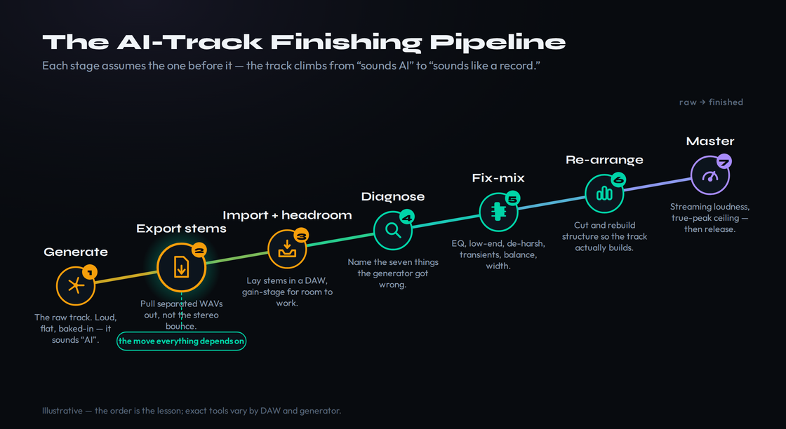
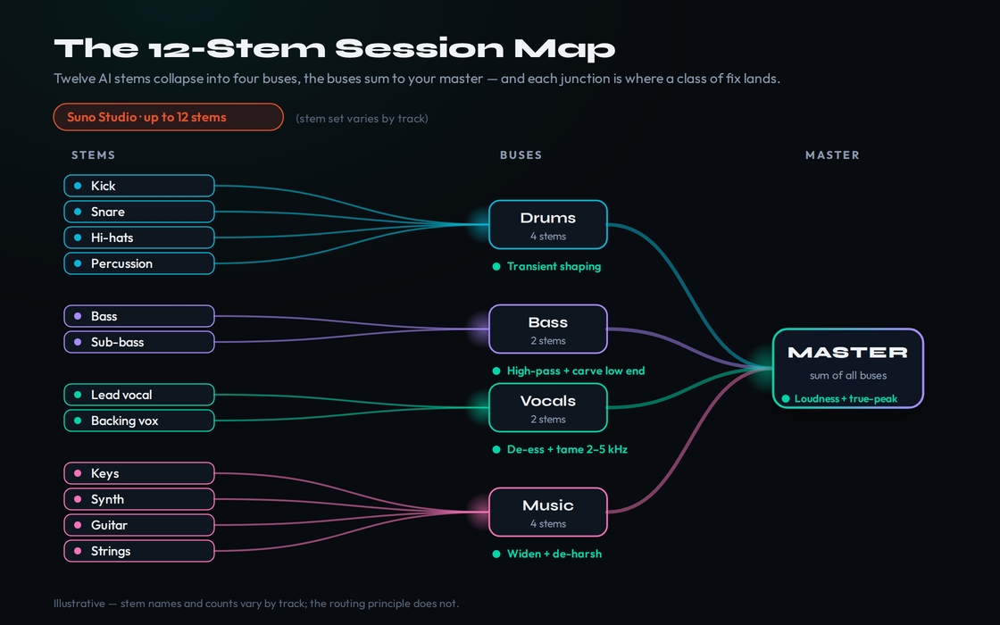
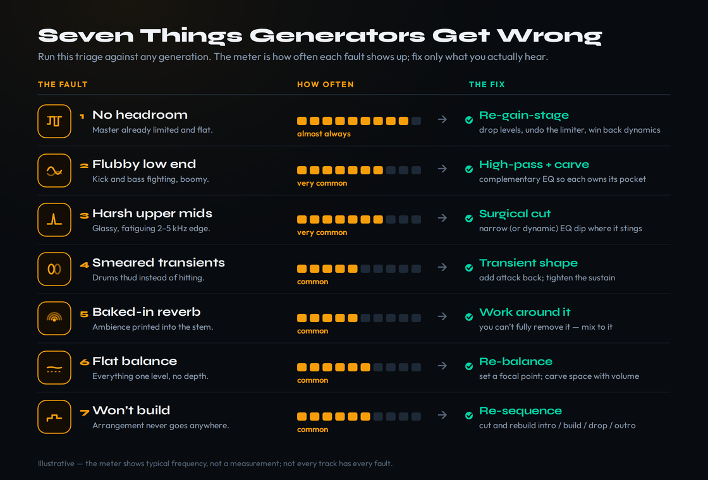

You generated something good. The melody lands, the vocal has a hook, the vibe is right — and then you play it next to a real record and the difference is brutal. It sounds flat, weirdly loud and somehow harsh and dull at the same time, the low end is a soup, and the structure just… sits there. That gap between a generation you like and a track that passes as a record is not the model’s fault and it is not yours. It is the part nobody is teaching: the finishing. Exporting the stems, importing them into a real DAW, fixing the specific things generators get wrong, and then mixing, arranging and mastering the result like any other multitrack session. This guide is the bridge between “I generated something” and “I released something,” and the good news is that almost every problem in an AI track is a problem producers already know how to solve — once the parts are separated and in front of you.
This article links to MPW tools and to third-party platforms, some of which are affiliate links. If you sign up through one we may earn a commission at no cost to you. It changes nothing about the method — the workflow, the tool capabilities and the honest caveats below are reported as they are, click or not.
AI tracks sound “AI” because generators hand you an over-limited, slightly harsh, low-end-mushy stereo bounce with a structure that never really builds. You fix it the way you’d fix any rough mix: get the stems out (Suno Studio exports up to 12 time-aligned WAV stems; ElevenLabs can split too; if you only have a stereo file, run it through a separation tool), import them with headroom, diagnose the seven usual problems, run a fix-it mix chain (gain-stage, surgical EQ, transients, tame the baked-in reverb, re-balance, width), re-arrange so it builds, and master for streaming at around −14 LUFS with a true-peak ceiling. None of it requires a producer’s decade — it requires treating the generation as raw material, not a finished song.
One honesty note before the detail. AI music tooling changes almost weekly, so the tool specifics here were re-verified on June 26, 2026 — and one of them had already flipped since this guide was first scoped. The legal and copyright questions that sit under all of this are genuinely unsettled in 2026, so this piece does not pretend to resolve them; it points you to the dedicated explainers and keeps the focus where it belongs, on craft. The promise is narrow and achievable: take a track that screams “AI” and make it sound like a record you made.
Why AI Tracks Sound “AI” — and What Finishing Fixes
It helps to be precise about what people actually hear when they say a track “sounds AI,” because the phrase bundles together several distinct, fixable defects. The first is loudness without life: most generators hand you a master that is already squashed up against a limiter, so the file is loud but has no dynamics left to give. The second is a spectral signature — a slightly glassy 2–5 kHz harshness layered over a low end that is full but undefined, the bass and kick occupying the same muddy region with no separation. The third, and the one listeners feel without being able to name, is structure: the track states an idea and then simply continues, with no real intro, no build, no drop, no payoff. A human arrangement breathes; a raw generation tends to plateau.
The reason all three are fixable comes down to what a generator is and is not. It is an extraordinary idea machine and a mediocre mix engineer. It commits choices — arrangement, balance, tone, loudness — that a producer would normally leave open until the end, and it commits them in a single irreversible stereo bounce. The entire job of finishing is to un-commit those choices: to get back to separate elements you can re-balance, re-tone and re-sequence. That is why the single most important move in this whole workflow happens before you touch a single plugin — you start from stems, not from the stereo file. Everything downstream depends on it, and the difference between editing a stereo bounce and editing stems is the difference between painting over a photograph and repainting the scene.
Framing it this way also defuses the anxiety that makes people give up. You are not trying to “trick” anyone or scrub a fingerprint — that is a losing game we cover honestly in how AI music detection works, and it is the wrong goal. You are doing legitimate production: taking raw material and shaping it with craft, which is exactly the human contribution that makes a track better and the contribution that matters for authorship and rights. The more of your own decisions, playing and arrangement you layer on, the more the track becomes yours in every sense. Finishing is not damage control; it is the part of the process where the record actually gets made.

The pipeline above is the whole article in one picture, and it is worth internalizing the order. Each stage assumes the one before it: you cannot re-balance what you have not separated, you cannot diagnose what you have not gain-staged into clean headroom, and you cannot master what you have not first mixed and arranged. Producers who skip straight to slapping a limiter on the stereo bounce are trying to master a problem that lives three stages upstream, which is why it never works. We will walk the stages in order, and by the end the abstract “make it sound professional” goal will have decomposed into a sequence of concrete, ordinary mixing moves.
Get the Stems Out
Stems are separated audio tracks — vocals on one file, drums on another, bass, keys, synths and so on — instead of one mixed-down stereo file. If the term is new, our Bible entry on stems defines it properly; the practical point is that stems are the raw material a DAW needs. Your export options in 2026 depend entirely on which generator you used, and this is the part of the guide most likely to have drifted since you read it, so treat the specifics as a snapshot and confirm inside the tool.
Suno is the most direct path, and it is the reason this workflow is suddenly mainstream. Inside Suno’s Studio environment, the Export menu offers a Multitrack option that splits your generation into up to twelve time-aligned WAV stems — vocals, drums, bass, and more — that all line up on the same timeline when you drop them into your DAW. Because they are time-aligned, you import them, set every clip to bar one, and the session reassembles itself. Stem export is available on Suno’s paid tiers; the browser-based multitrack editor and per-stem MIDI extraction (its “Get MIDI” action, which costs credits and produces a rough sketch rather than a faithful transcription) sit in the higher Studio tier. There is also a “tempo-locked” WAV option that grid-aligns the stems to a project BPM, which is worth using if you plan to time-stretch or re-sequence. Plans and prices shift constantly, so confirm the current tiers on Suno’s own pricing page rather than trusting any figure quoted second-hand; our guide to using Suno walks the generation-and-export steps in detail.
The big shift since early 2026: Udio’s downloads — including stems — are paused during its licensing transition with the major labels, as the platform moves toward a closed, licensed ecosystem. If you generated on Udio and already downloaded before the freeze, you can finish those files normally; if not, you currently cannot reliably pull stems out of Udio at all. Check Udio’s current status before you plan a workflow around it — this is exactly the kind of capability that flips without notice.
ElevenLabs’ Eleven Music takes a different route: when you download a track you can choose the full song, a vocals-and-instrumental split, or separated stems, and developers can hit the same stem-separation capability through its API. Because Eleven Music is trained on licensed material, its commercial posture is cleaner than the litigation-shadowed generators, which can matter if you are finishing tracks to sell — see making money with AI music for where that distinction bites. If you are still choosing a generator, our roundup of the best AI music generators in 2026 compares export and licensing posture head-to-head, because “can I even get stems out, and am I allowed to sell the result” should be a first-tier selection criterion, not an afterthought.
And if all you have is a stereo bounce — an older generation, a platform that froze exports, a track a collaborator sent you — you are not stuck. A stem-separation tool will pull a stereo mix apart into vocals, drums, bass and other, and modern separators are good enough to give you real mixing latitude. They are not magic: separation introduces artifacts and bleed, the “other” bucket is often a catch-all, and labelling on non-standard instrumentation can be wrong, so treat separated stems as workable rather than pristine. Our stem separation guide covers the tools and their limits; the honest summary is that native time-aligned stems beat separated ones, but separated stems beat being trapped with a stereo file.
Import and Set Up Your Session
With stems in hand, resist the urge to start mixing immediately. The first job is to build a clean session, because a generation arrives with no headroom and headroom is the room you need to actually work. Import every stem, line them all up at bar one (time-aligned exports do this for you; separated stems may need a nudge), and check your stereo bus. There is a strong chance the summed stems are clipping or sitting right at the ceiling, because the model already pushed everything loud. Headroom is simply the gap between your loudest peak and the digital ceiling, and you want a generous one — pull a gain or trim on every channel until your mix bus is peaking somewhere around −6 dB, leaving space for the processing to come.
One more setup check pays for itself repeatedly: phase and alignment. Native time-aligned stems sum back to the original mix cleanly, but separated stems — and occasionally even native ones on busy material — can carry small phase relationships that make the low end weaker or hollow when summed. Solo the kick and bass together and listen for a low end that disappears or thins; if it does, nudge one stem by a few samples or flip a polarity and listen again. It is a thirty-second check that prevents you from spending an hour trying to EQ a problem that is actually a phase problem, and it is the kind of thing that separates a session that mixes easily from one that fights you the whole way.
This re-gain-staging step feels boring and is quietly decisive. Every plugin you add — EQ, compression, saturation — behaves differently depending on the level hitting it, and a chain fed by a hot, limited signal will sound crushed and lifeless no matter how well you set it. By dropping everything into clean headroom first, you let the rest of the mix breathe and you give yourself somewhere to put the dynamics back. Group your stems into logical buses while you are here — drums together, music elements together, vocals on their own — so you can treat sections as a unit later. A little routing discipline now is what makes the re-arrangement stage painless.

The session map above shows the shape you are building toward: twelve raw stems collapsing into a handful of buses, each bus the place a specific class of fix lands. It is worth setting this routing up deliberately rather than mixing twelve channels in parallel, because the diagnostic that follows is organised the same way — problems cluster by element, and a bus structure lets you solve them by group. If you have never built a full session from stems before, our walkthrough of how to mix a full song is the companion piece; everything in it applies to AI stems exactly as it does to recorded ones, which is the whole point.
The Diagnostic: Seven Things Generators Get Wrong
Before you reach for a single plugin, listen analytically and name the problems. AI generations fail in a recognisable, repeatable set of ways, and once you can hear them individually the “it just sounds off” fog clears into a checklist. There are seven usual suspects. One: no headroom — the master is already limited and flat, with no dynamic life. Two: flubby or phasey low end — bass and kick fighting in the same frequency range, undefined and boomy. Three: harsh upper mids — a glassy, fatiguing edge around 2–5 kHz that the model tends to over-cook. Four: smeared transients — drums that thud rather than hit, with no snap or attack. Five: baked-in reverb — ambience generated into a stem, which you cannot fully remove and have to work around. Six: a flat balance — everything at one level, no focal point, no depth. Seven: an arrangement that never builds — the structural problem, addressed in its own stage.
The value of naming them is that each maps to a specific, ordinary fix, and most of those fixes are subtractive rather than additive — you are removing what the model over-did more often than adding something new. Harshness is an EQ cut, not a treble boost in reverse; muddy low end is a high-pass and a carve, not more bass; lifelessness is restored dynamics, not more volume. The instinct of a beginner is to pile processing on top of an AI track to “improve” it; the instinct of a finisher is to identify what is wrong and take it out. Work through the seven in roughly the order above, because they compound — clean low end makes harshness easier to judge, and restored transients change how loud the track feels before you ever touch a limiter.

Treat the problem-and-fix map above as a triage sheet you can run against any generation. Not every track has all seven — a sparse piano-and-vocal piece may only suffer from harshness and a baked-in reverb — so listen first and only fix what is actually wrong. Over-processing a track that did not need it is its own way to make something sound worse, and the discipline of doing nothing where nothing is broken is part of the craft. With the diagnosis done, the fixes themselves are a standard chain.
The Fix-It Mix Chain
The chain is DAW-agnostic — the moves are identical in Ableton, Logic, FL Studio or anything else — and it follows the diagnostic in order. Start with gain-staging, already done if you set up your session properly. Next, clean the low end: high-pass everything that has no business below 100 Hz (most things), then use complementary EQ so the kick and bass occupy different pockets — carve a dip in the bass where the kick’s fundamental lives, or vice versa. This single move resolves most of the “muddy” complaint. Then go surgical on the harshness: sweep a narrow EQ band through 2–5 kHz, find the glassy, fatiguing frequency, and cut it a few dB — a dynamic EQ that only acts when the harshness spikes is even cleaner. The general principles here live in our mixing Bible entry, and the surgical-EQ habit is the same one that rescues badly recorded human tracks.
Now restore the transients. A transient shaper on the drum bus, pushing attack, brings back the snap the generation smeared — our transient entry explains why those first few milliseconds carry so much of a drum’s perceived punch. For the baked-in reverb, accept the limitation honestly: ambience generated into a stem cannot be fully extracted. Some generators offer a “remove FX” or dry-vocal option at the source — use it if it exists. Otherwise you work around it: a gate or expander can pull down the reverb tails in the gaps, and you simply avoid stacking your own reverb on top of one you cannot remove. Then re-balance — this is just mixing. Set levels so the track has a focal point and a front-to-back depth, automate where a section needs to lift, and use panning and a touch of stem-bus processing to open the stereo image. If the low end is mono-collapsed, keep the bass centred and widen the higher elements rather than smearing everything wide.
Two moves are worth singling out because they address the specific lifelessness AI tracks suffer from. The first is saturation: a touch of harmonic saturation or tape emulation on the drum bus, the bass, or the whole mix adds the odd-order harmonics and gentle non-linearity that recorded gear imparts and that a clean digital generation lacks — it is often the difference between a mix that sounds “made on a computer” and one that sounds like it passed through something. Use it sparingly; the goal is warmth and cohesion, not obvious distortion. The second is parallel compression on drums or the full mix — a heavily compressed copy blended underneath the dynamic original, which restores density and energy without flattening the transients you just rescued. Both moves give back the life the limiter took, which is precisely what a squashed generation is missing, and both are standard producer tools rather than anything AI-specific.
Two cross-cutting habits make all of this faster. First, mix against a reference: pull in a commercially released track in the same genre, level-match it, and A/B constantly — it is the single most reliable way to catch harshness, muddiness and balance problems that your ear normalises to after twenty minutes. Our guide to using reference tracks covers how to do it without simply copying. Second, if the keeper element is the vocal, give it its own dedicated treatment rather than burying it in the general mix — which is the next stage. For a structured starting chain you can adapt, the mastering signal chain and vocal chain builder tools lay out sensible default orders to work from.
Vocals: Keep or Replace the AI Vocal
If the AI vocal is the part you fell in love with, it deserves real treatment, and the techniques are the same ones you would use on a recorded vocal — with one extra consideration. AI vocals often arrive with that baked-in reverb and a slightly synthetic edge, so the chain typically runs: subtractive EQ to remove harshness and mud, de-essing to tame sibilance the model tends to over-emphasise, gentle compression to even the level, then your own tasteful reverb and delay placed in the now-controlled signal. Our walkthrough of how to mix vocals applies directly; the AI-specific note is to be conservative with anything that adds high-frequency content, because you are starting from a source that is already a touch harsh on top.
The harder, more interesting question is whether to keep the AI vocal at all. There are good reasons to replace it: a sung-yourself or session-singer vocal sidesteps the thorniest rights and authorship questions entirely, it gives you a cleaner, more controllable source, and it is often the fastest way to make a track stop sounding AI, because the human voice is the element listeners scrutinise most. You can keep the AI vocal as a guide — using its melody and phrasing as a reference and the per-stem MIDI as a starting sketch — and re-sing or re-play the part yourself. Replacing the lead vocal with your own performance is also one of the clearest ways to add the human authorship that matters when you get to the rights stage. Whether you keep it or replace it, treat the vocal as the centrepiece it usually is, and mix everything else to make room for it.
Re-Arrange Like a Producer
This is the stage that separates a finished AI track from a polished-but-still-AI one, because structure is the tell listeners feel most. A generation tends to present a complete-sounding loop that never goes anywhere; a real arrangement has an intro that sets up, a build that creates tension, a drop or chorus that pays it off, and an outro that lands the plane. With your stems separated, you have everything you need to impose that shape. Cut the generation into sections on the timeline, then re-sequence: strip the intro down to one or two elements and bring the rest in over time; mute stems to create a breakdown; drop everything out for a beat before the chorus to make it hit harder. None of this is possible with a stereo bounce, which is the whole reason the workflow starts with stems.
The details that sell a re-arrangement are the transitions between sections, and they are easy to add once the parts are separate. A riser or a reverse cymbal lifting into a chorus, a filter sweep opening up as a drop lands, a half-bar drum fill, a beat of silence before the hook — these are the connective tissue a raw generation lacks entirely, and each one is a few minutes of work on stems you already have. Automate a low-pass filter to open across a build, ride the energy with volume automation rather than leaving every section at one static level, and let the arrangement move. This is also where a track stops sounding like a loop and starts sounding like a song with intent behind every section change.
Re-arrangement is also where you replace the weak material that no amount of mixing will save. If a section is generically AI — a filler bridge, a chord progression that sags — cut it and replace it with your own playing, a sampled part, or a re-generated section you like better. This is the moment to layer in your own instruments, a real bassline, a recorded guitar, a percussion loop you programmed, because every human part you add does double duty: it makes the track better and it deepens your authorship of it. Our guide to arranging a song covers the structural principles in full; applied to AI stems, the mindset is simply that the generation gave you parts, not a finished arrangement, and arranging them is your job.
Master for Streaming — Honestly
With the mix balanced and the arrangement built, mastering is the final, modest stage — modest because a good mix needs little, and because the loudness war you may think you are fighting is one streaming platforms have already ended for you. Services normalise playback loudness, so uploading a brickwalled master does not make you louder than anyone else; it just means the platform turns you down, and a track squashed to be loud and then turned down sounds worse than a track with dynamics left intact. The practical target most engineers work toward is an integrated loudness around −14 LUFS with a true-peak ceiling around −1 dBTP, which sits comfortably with how the major platforms normalise — though exact reference points differ by service and shift over time, so treat the number as a guide, not a law.
The chain to get there is ordinary mastering: gentle bus compression for glue if the mix needs it, a final corrective EQ, and a limiter set to catch peaks and reach your loudness target without crushing the dynamics you just worked to restore. Because your AI track probably arrived over-limited, the temptation is to add more loudness processing; resist it, and let the normalised playback do its job. Our full guide to mastering for streaming covers the targets and the loudness-penalty reality in depth, and the LUFS target reference tool gives you per-platform numbers to check against. Before you bounce the final, run it through a pre-delivery checklist so a stray clip or a metadata gap does not derail an otherwise finished track.
Before You Release: Provenance, Authorship and Platform Rules
Finishing a track in a DAW does more than improve the sound — it changes its status, and this is where craft meets the parts of the law that are genuinely unsettled in 2026. The short, accurate version: in the United States, copyright requires human authorship, so a purely AI-generated track is not registrable, while the human contributions you layer on — your arrangement, your playing, your mixing decisions, your re-sung vocal — are exactly the material that can be protected. That makes finishing not just an audio improvement but an authorship one. The detail genuinely matters and genuinely moves, so rather than restate a rule that may change, we keep the specifics in the dedicated explainers: start with whether you can copyright AI music and the broader hub on whether AI music is legal.
The platform side is more concrete but also in flux. Distributors and streaming services increasingly expect you to disclose AI involvement at upload, and the consistent pattern is that disclosed AI music is generally accepted while concealment is what gets tracks pulled — the mechanics are covered in how to release AI music. Keep your session files, your stems and your dated drafts as a record of the human work you did; that paper trail is both your authorship evidence and your fastest answer if a platform ever questions a track. And because the legal weather shifts the whole space at once — the pending 2026 rulings in particular — our 2026 AI music lawsuits tracker is the page to check before a release if you want the current state rather than a snapshot. The honest bottom line: do the human work, document it, disclose it, and let the dedicated pages carry the legal detail.
Finish One Track: Three Exercises
Reading the workflow is not the same as running it. These three exercises take one generation from raw to released and build the habit that turns “sounds AI” into “sounds like you.” Do them in order on a single track you actually like.
- Take one generation you like and export its stems — native time-aligned WAVs if your generator supports them, or a stereo bounce run through a separation tool if not. Note how many usable stems you got and whether anything is mislabelled or bleeding.
- Import every stem into a fresh DAW session, line them up at bar one, and group them into drums, music and vocal buses.
- Pull a trim on each channel until your mix bus peaks around −6 dB. Play the track once and write one sentence on what now sounds wrong — that sentence is your diagnostic starting point.
- Go through the seven-problem checklist against your track and mark which ones it actually has — resist fixing anything that is not broken.
- Work the fixes in order: clean the low end with high-pass and complementary EQ, cut the 2–5 kHz harshness surgically, restore transients on the drum bus, then re-balance against a level-matched reference track in the same genre.
- A/B your mix against the reference every few minutes and stop when the two sit in the same tonal world. Bounce this mix and keep it — it is your “mixed but not arranged” checkpoint.
- Cut the track into sections and re-sequence it into a real intro, build, payoff and outro — mute stems for a breakdown, and replace at least one weak section with your own played, sampled or re-generated part.
- Master the result toward roughly −14 LUFS with a true-peak ceiling around −1 dBTP, resisting the urge to over-limit, and run it through a pre-delivery checklist before bouncing.
- Open one document and record every human contribution you made — arrangement, parts played, mixing decisions, any re-sung vocal — alongside the tools and versions used. File it with your stems and session as your authorship and provenance record for that release.
Frequently Asked Questions
Because generators hand you a master that is already squashed against a limiter, so the file is loud but has no dynamics left, often with a slightly harsh top end and an undefined low end on top. The fix is not more processing — it is to get back to stems, re-gain-stage into clean headroom, and restore the dynamics and tonal balance the model flattened. A loud-but-lifeless bounce is the single most common AI tell, and it is also the most straightforward to fix once the parts are separated.
Yes. Suno’s Studio environment can export your generation as up to twelve time-aligned WAV stems through its Multitrack export option, and it can also extract a rough per-stem MIDI sketch. Stem export sits on Suno’s paid tiers, with the full multitrack editor and MIDI extraction in the higher Studio tier. Because Suno changes plans and features frequently, confirm the current tiers and export options inside the app rather than relying on any quoted figure, including this one.
You finish it like any other multitrack: export the stems, import them into a DAW with proper headroom, diagnose the usual problems (no headroom, mushy low end, harsh upper mids, smeared transients, baked-in reverb, flat balance, a structure that never builds), run an ordinary fix-it mix chain to address each one, re-arrange the track so it actually builds, and master it for streaming. “Professional” is not a plugin you buy — it is the accumulation of these ordinary mixing and arrangement decisions applied to raw material.
Realistically, yes — finishing means re-balancing, re-tuning and re-sequencing separate elements, and that requires a multitrack environment. Any DAW works; the moves in this guide are identical in Ableton, Logic, FL Studio, Reaper or anything else. Some generators include a browser-based editor that handles the basics, but for genuine control over EQ, transients, arrangement and mastering you want a real DAW. The good news is that the workflow assumes no exotic plugins — your DAW’s stock tools are enough to do everything here.
Generally yes, through a distributor, provided you hold the rights and disclose AI involvement honestly at upload. The consistent pattern across platforms in 2026 is that disclosed AI music is accepted while concealment is what gets tracks pulled. Distributor policies and disclosure mechanics differ and change, so check the current rules before release — our guide to releasing AI music covers the compliant path, and the lawsuits tracker covers the broader legal weather that shapes it.
Both are subtractive fixes. For harshness, sweep a narrow EQ band through 2–5 kHz, find the glassy, fatiguing frequency, and cut it a few dB — a dynamic EQ that only acts on the spikes is cleaner still. For a flubby low end, high-pass everything that does not need sub content and use complementary EQ so the kick and bass occupy different pockets instead of fighting in the same muddy range. Do these on separated stems, not the stereo bounce, and check the result against a level-matched reference track.
If you can, it is often worth it. A re-sung or session vocal gives you a cleaner, more controllable source, it is one of the fastest ways to stop a track sounding AI because listeners scrutinise the voice most, and it sidesteps the thorniest rights and authorship questions while deepening your own authorship of the track. You can keep the AI vocal as a melodic guide and re-sing over it. If you keep the AI vocal, treat it with subtractive EQ, de-essing and gentle compression, and be conservative with anything that adds high-frequency content, since the source is usually already a little harsh on top.
The human work you add — arrangement, playing, mixing decisions, a re-sung vocal — is exactly the material that can carry authorship, whereas a purely AI-generated track is not registrable under the current US human-authorship standard. So finishing genuinely changes the picture, and keeping your stems, sessions and dated drafts documents that human contribution. This area is unsettled and moving in 2026, though, so we defer the specifics to our dedicated explainers on copyrighting AI music and whether AI music is legal rather than stating a rule that may change.